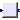
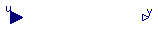

This package contains the partial blocks of the Controller library. The components define global parameters, like startTime, method, Ts or steadyStateStart and handle the input/output conversation.
Extends from Modelica.Icons.Library (Icon for library).
| Name | Description |
|---|---|
| PartialBlockIcon | Basic graphical layout of discrete/continuous block |
|  PartialDiscreteSISO_equality | Common discrete part of blocks extending from PartialSISO_equality |
| PartialSampledBlock | Partial block of Sampled library (icon + default parameters) |
| Partial Single Input Single Output (continuous or discrete) control block of Controller library | |
| Partial Single Input Single Output (continuous or discrete) control block of Controller library | |
| Partial Single Input Single Output (continuous or discrete) control block of Controller library where usually y=u if continuous block |
partial block PartialBlockIcon "Basic graphical layout of discrete/continuous block"end PartialBlockIcon;
 Modelica_LinearSystems2.Controller.Interfaces.PartialDiscreteSISO_equality
Modelica_LinearSystems2.Controller.Interfaces.PartialDiscreteSISO_equality

Extends from Interfaces.PartialBlockIcon (Basic graphical layout of discrete/continuous block).
| Type | Name | Default | Description |
|---|---|---|---|
| Integer | sampleFactor | 1 | Ts=sampleClock.sampleTime*sampleFactor |
| Type | Name | Description |
|---|---|---|
| input RealInput | u | Continuous or discrete input signal of block |
| output RealOutput | y | Continuous or discrete output signal of block |
partial block PartialDiscreteSISO_equality
"Common discrete part of blocks extending from PartialSISO_equality"
extends Interfaces.PartialBlockIcon;
parameter Integer sampleFactor(min=1)=1
"Ts=sampleClock.sampleTime*sampleFactor";
final parameter Modelica.SIunits.Time Ts = sampleClock.sampleTime*sampleFactor
"Sample time";
Modelica.Blocks.Interfaces.RealInput u
"Continuous or discrete input signal of block";
Modelica.Blocks.Interfaces.RealOutput y
"Continuous or discrete output signal of block";
protected
outer SampleClock sampleClock "Global options";
// Derived quantities
discrete Real u_sampled "Sampled continuous input signal u";
Integer ticks
"Actual number of base samples starting from the last sample time instant";
Boolean sampleTrigger "Triggers next sample time";
equation
if sampleClock.blockType == Types.BlockType.Continuous then
// no sampling in sampleClock
sampleTrigger = sample(Ts, Ts);
ticks = 0;
else
when sampleClock.sampleTrigger then
ticks = if pre(ticks) < sampleFactor then pre(ticks) + 1 else 1;
end when;
sampleTrigger = sampleClock.sampleTrigger and ticks >= sampleFactor;
end if;
initial equation
pre(ticks) = 0;
end PartialDiscreteSISO_equality;
| Type | Name | Default | Description |
|---|---|---|---|
| Advanced options | |||
| BlockTypeWithGlobalDefault | blockType | Types.BlockTypeWithGlobalDef... | Type of block (Continuous/Discrete) |
| MethodWithGlobalDefault | methodType | Types.MethodWithGlobalDefaul... | Type of discretization if discrete block |
| Integer | sampleFactor | 1 | Ts=sampleClock.sampleTime*sampleFactor |
| InitWithGlobalDefault | initType | Types.InitWithGlobalDefault.... | Type of initialization (no init/initial/steady state/output) |
partial block PartialSampledBlock
"Partial block of Sampled library (icon + default parameters)"
extends Icons.PartialBlockIcon(cont=continuous);
parameter Types.BlockTypeWithGlobalDefault blockType=Types.BlockTypeWithGlobalDefault.UseSampleClockOption
"Type of block (Continuous/Discrete)";
final parameter Boolean continuous = blockType == Types.BlockTypeWithGlobalDefault.Continuous or
blockType == Types.BlockTypeWithGlobalDefault.UseSampleClockOption and
sampleClock.blockType == Types.BlockType.Continuous
"= true, if continuous block, otherwise discrete block";
parameter Types.MethodWithGlobalDefault methodType=Types.MethodWithGlobalDefault.UseSampleClockOption if
not continuous "Type of discretization if discrete block";
final parameter Types.Init init=if initType == Modelica_LinearSystems2.Controller.Types.InitWithGlobalDefault.UseSampleClockOption then
sampleClock.initType else initType
"Type of initialization (no init/InitialState/SteadyState)";
parameter Integer sampleFactor(min=1)=1 if not continuous
"Ts=sampleClock.sampleTime*sampleFactor";
parameter Types.InitWithGlobalDefault initType=Types.InitWithGlobalDefault.UseSampleClockOption
"Type of initialization (no init/initial/steady state/output)";
protected
outer SampleClock sampleClock "Global options";
end PartialSampledBlock;
 Modelica_LinearSystems2.Controller.Interfaces.PartialSISO
Modelica_LinearSystems2.Controller.Interfaces.PartialSISO
Extends from PartialSampledBlock (Partial block of Sampled library (icon + default parameters)).
| Type | Name | Default | Description |
|---|---|---|---|
| Advanced options | |||
| BlockTypeWithGlobalDefault | blockType | Types.BlockTypeWithGlobalDef... | Type of block (Continuous/Discrete) |
| MethodWithGlobalDefault | methodType | Types.MethodWithGlobalDefaul... | Type of discretization if discrete block |
| Integer | sampleFactor | 1 | Ts=sampleClock.sampleTime*sampleFactor |
| InitWithGlobalDefault | initType | Types.InitWithGlobalDefault.... | Type of initialization (no init/initial/steady state/output) |
| Type | Name | Description |
|---|---|---|
| input RealInput | u | Continuous or discrete input signal of block |
| output RealOutput | y | Continuous or discrete output signal of block |
partial block PartialSISO "Partial Single Input Single Output (continuous or discrete) control block of Controller library" extends PartialSampledBlock;Modelica.Blocks.Interfaces.RealInput u "Continuous or discrete input signal of block"; Modelica.Blocks.Interfaces.RealOutput y "Continuous or discrete output signal of block"; protected Internal.DiscreteStateSpace discretePart( methodType=methodType, sampleFactor=sampleFactor, init=init) if not continuous "Discretized SISO system"; equation connect(u, discretePart.u[1]);end PartialSISO;
Modelica_LinearSystems2.Controller.Interfaces.PartialSISO2
Extends from PartialSampledBlock (Partial block of Sampled library (icon + default parameters)).
| Type | Name | Default | Description |
|---|---|---|---|
| Advanced options | |||
| BlockTypeWithGlobalDefault | blockType | Types.BlockTypeWithGlobalDef... | Type of block (Continuous/Discrete) |
| MethodWithGlobalDefault | methodType | Types.MethodWithGlobalDefaul... | Type of discretization if discrete block |
| Integer | sampleFactor | 1 | Ts=sampleClock.sampleTime*sampleFactor |
| InitWithGlobalDefault | initType | Types.InitWithGlobalDefault.... | Type of initialization (no init/initial/steady state/output) |
| Type | Name | Description |
|---|---|---|
| input RealInput | u | Continuous or discrete input signal of block |
| output RealOutput | y | Continuous or discrete output signal of block |
partial block PartialSISO2 "Partial Single Input Single Output (continuous or discrete) control block of Controller library" extends PartialSampledBlock;Modelica.Blocks.Interfaces.RealInput u "Continuous or discrete input signal of block"; Modelica.Blocks.Interfaces.RealOutput y "Continuous or discrete output signal of block"; protected Internal.DiscreteStateSpace2 discretePart( methodType=methodType, sampleFactor=sampleFactor, init=init) if not continuous "Discretized SISO system"; equation connect(u, discretePart.u[1]);end PartialSISO2;
Modelica_LinearSystems2.Controller.Interfaces.PartialSISO_equality

If discrete block, the output y is sampled according to sample time sampleClock.sampleTime * sampleFactor, where sampleClock.sampleTime is defined globally in the outer component sampleClock and sampleFactor is an Integer parameter of component Sampler.
If continuous block, the output y is identical to the input u.
Extends from Icons.PartialBlockIcon (Basic graphical layout of discrete/continuous block).
| Type | Name | Default | Description |
|---|---|---|---|
| BlockTypeWithGlobalDefault | blockType | Types.BlockTypeWithGlobalDef... | Type of block (Continuous/Discrete) |
| Integer | sampleFactor | 1 | Sample time = sampleFactor * sampleClock.sampleTime |
| Type | Name | Description |
|---|---|---|
| input RealInput | u | Continuous or discrete input signal of block |
| output RealOutput | y | Continuous or discrete output signal of block |
partial block PartialSISO_equality
"Partial Single Input Single Output (continuous or discrete) control block of Controller library where usually y=u if continuous block"
extends Icons.PartialBlockIcon(cont=continuous);
import Modelica_LinearSystems2.Controller.Types;
parameter Modelica_LinearSystems2.Controller.Types.BlockTypeWithGlobalDefault
blockType = Types.BlockTypeWithGlobalDefault.UseSampleClockOption
"Type of block (Continuous/Discrete)";
final parameter Boolean continuous = blockType == Types.BlockTypeWithGlobalDefault.Continuous or
blockType == Types.BlockTypeWithGlobalDefault.UseSampleClockOption and
sampleClock.blockType == Types.BlockType.Continuous
"= true, if continuous block, otherwise discrete block";
parameter Integer sampleFactor(min=1)=1 if not continuous
"Sample time = sampleFactor * sampleClock.sampleTime";
Modelica.Blocks.Interfaces.RealInput u
"Continuous or discrete input signal of block";
Modelica.Blocks.Interfaces.RealOutput y
"Continuous or discrete output signal of block";
protected
outer SampleClock sampleClock "Global options";
end PartialSISO_equality;